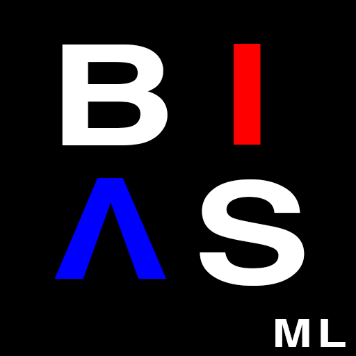
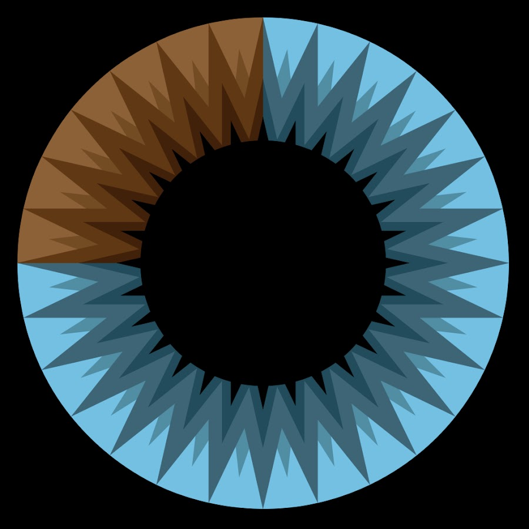
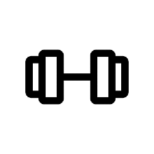
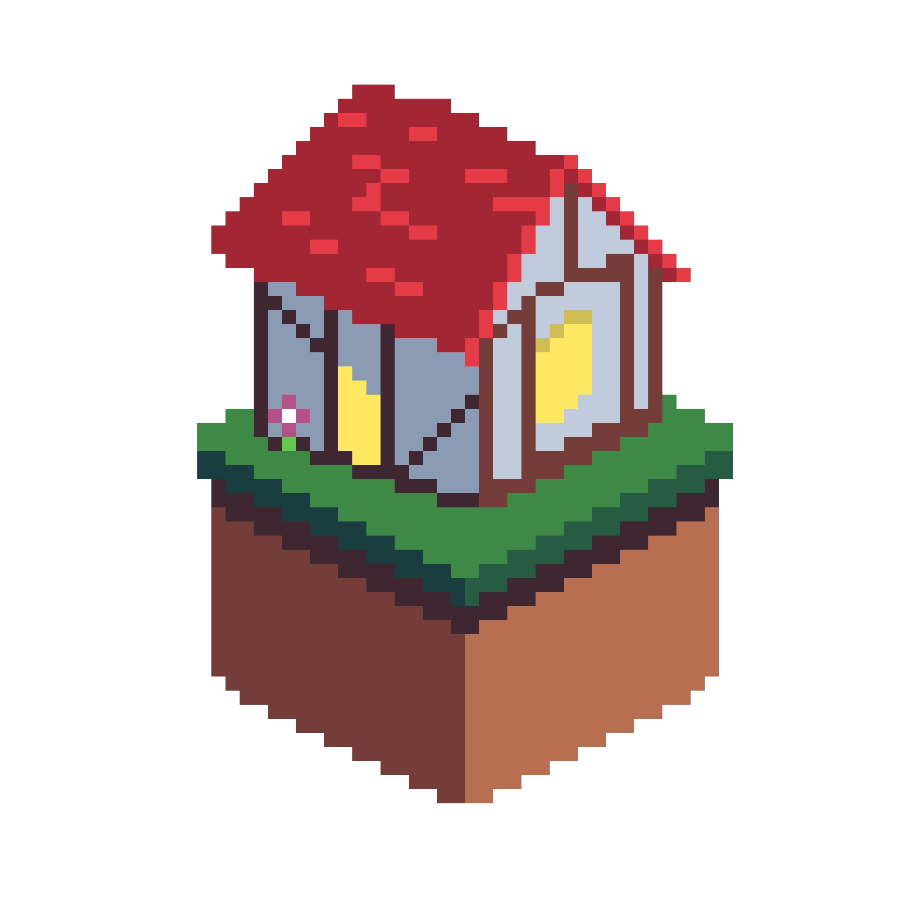
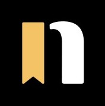

BiasML is a web app implementing web-scraping and natural langauge processing to determine political bias in online articles.
It uses React and Google Firebase.

Based on the neural network youtube video made by 3Blue1Brown, I built a neural network and trained it on the MNIST dataset.
It accurately identifies handwritten digits with about 70-80% accuracy.

My desire to have a customizeable way to and log my workouts resulted in the creation of this still incomplete iOS app.
Keep an eye out for version 2.0.

RateMyLease is a web-app aimed at assisting UC Davis students in finding a lease during the 2020 lockdown.
My team and I implemented it using React, Express, and MongoDB.
For a University course, my team and I implemented a single cycle processor and its ISA all in System Verilog.
The processor is intended for radio transmission computations.

I built Novelly's marketing website using Webflow and the professional advice of skilled designers.
It describes Novelly's mission to empower young writers.
A spin on Wordle, the daily word game. Everyday, Globle randomly selects a local area nearby and your objective is to reach it.
Globle is made using Express and React Native.